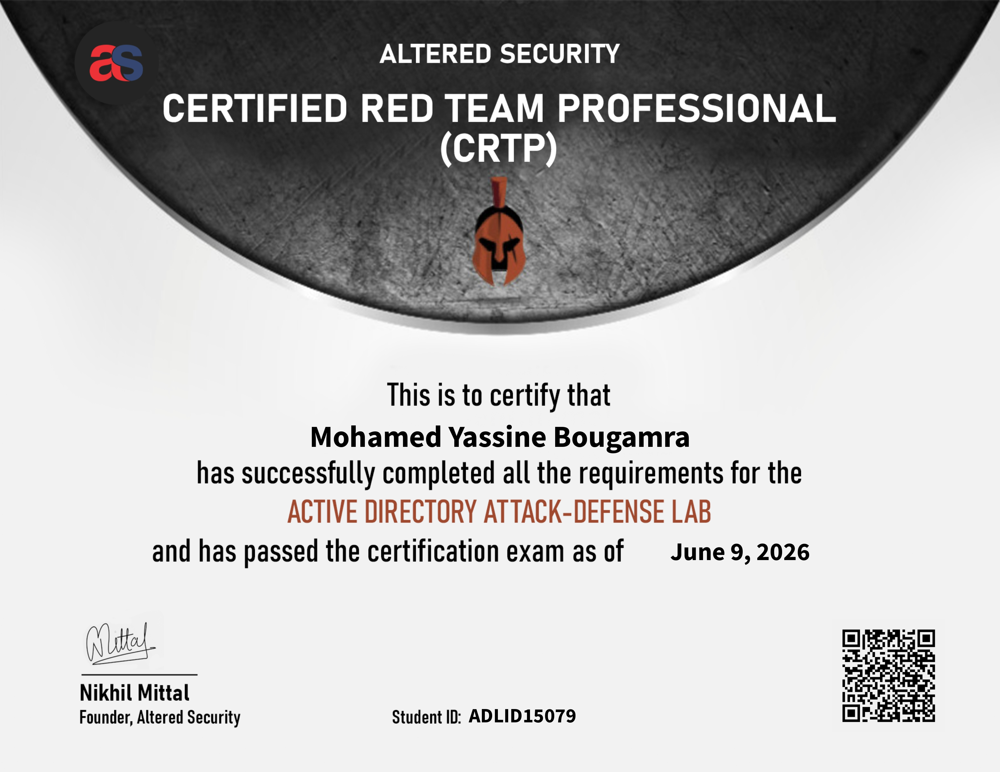

Overview
Looking to take up the CRTP challenge? Here’s my review and some preparation tips.
CRTP: Certified Red Team Professional
Credits: Altered Security
Focus: Pure Windows Active Directory exploitation
Goal: Learn practical red team methodologyCertification Snapshot

Background
By day, I work on application security and web application penetration testing. I decided to take up the CRTP assessment from Altered Security as a personal challenge and learning opportunity to deepen my Active Directory offensive skills.
The CRTP offered a unique learning opportunity in these specific areas:
- A methodology of using PowerShell and Windows command line in a more in-depth manner.
- Covers even more AD attack vectors, such as abusing ADCS, database links, different types of delegation, domain trust relationships and many more.
- Pure Windows methodology, no Linux machines involved.
- Understanding of Microsoft Defender for Endpoint (MDE) and Microsoft Identity Protection (MDI) and bypass techniques.
Course Review
Over the span of 2 months, I spent approximately 3 hours each day after work as well as during the weekends to routinely tackle the course videos and the respective labs. The course videos essentially consisted of recordings of instructor Nikhil Mittal’s lectures, combined with hands-on demos of a full attack chain, commencing from an assumed breached scenario. The hands-on demos were great as the occasional issues encountered by Nikhil when issuing commands were beneficial when troubleshooting future similar problems in our own labs.
If you wish to skip the videos, there are PDFs and slides that are provided for studying as well. Along the way, I took note of crucial attacks and associated tools and commands within my Notion cheatsheet.
I encountered occasional technical difficulties when tackling the labs on my student virtual machine but the Altered Security staff were prompt and responsive when I sought assistance via the dedicated Discord channel.
- Follow the instructor demos closely
- Capture tool usage and command patterns
- Keep a structured cheat sheet in Notion
- Use the slides and PDFs as backups
- Ask for help quickly when the lab VM misbehavesExam Tips
I undertook the CRTP assessment and promptly submitted my report upon completion of the exam. Within a business week, I received official confirmation of my successful certification.
Thorough Enumeration
CRTP is focused on weaponizing misconfigurations within an Active Directory environment, rather than hunting for one-off, easily patched software vulnerabilities. Thus, extremely thorough enumeration becomes even more crucial for us as an attacker to plan out a viable attack path: machine configurations, mapping of trusts, listing down group policies, accessible machines, available tickets, delegations, services, user privileges and much more. It also explains why taking notes during your studies and having a cheat sheet would be essential to allow us to methodically assess the AD environment.
Tools and Transfers
Note that no tools are provided out of the box from the provided attacker machine. Hence, prepare your arsenal of functional scripts and binaries before starting the exam, and be familiar with multiple ways of transferring them between Windows machines. Do not let chores like tool transfer and simply trying to get them working properly become your downfall. Sometimes one way of transferring may not be viable and may fail for some scenarios, so do not rely on one technique of file transfer.
Google It
Copying and pasting instructions directly from your cheatsheet or from the lab manual will not work in several situations. Do a quick online search and understand the limitations of your tools, the thought process behind a command, and any posts on blogs or forums for resolving issues of a similar nature. Being proficient at on-the-spot research and troubleshooting will certainly help you successfully complete the CRTP assessment.
Right Before Your Eyes
Make sure to carefully read the results of commands. Sometimes, the stepping stone to laterally move to the next machine was right in front of my eyes yet I continued pursuing other potential avenues of attack simply due to overlooking those nuggets of information.
When in Doubt, Restart
After running commands against certain machines in the exam environment, I encountered responsiveness issues or was not receiving expected results. To tackle this, we are given the option to restart individual machines throughout the exam and it was most certainly a lifesaver in these scenarios.
Diligently Screenshot
Take lots of screenshots. With the number of terminals that may be open at once, I sometimes lose track of the steps taken to reach a certain stage of an attack. To save you from the pain of having to backtrack several times, it may be helpful to routinely take screenshots of every important command issued, together with the response. The screenshots also come in handy when crafting your detailed report for submission to Altered Security for grading.
1. Enumerate every machine and trust relationship
2. Track all credentials, tickets, and delegations
3. Prepare file transfer options before the exam starts
4. Search for command failures before retrying blindly
5. Restart machines if they stop responding
6. Screenshot every meaningful step for the reportHelpful Resources
The course by Altered Security itself was sufficient to tackle the CRTP exam. However, when troubleshooting issues, several external resources were lifesavers for me.
- Microsoft documentation for PowerShell, Active Directory, and delegation concepts.
- Community blog posts for command troubleshooting and attack-path validation.
- Cheat sheets for Kerberoasting, AS-REP Roasting, ADCS abuse, and trust enumeration.
- Personal notes and screenshots from the labs to keep the workflow consistent.
Conclusion
The CRTP was a strong and focused Active Directory challenge that pushed me to think more carefully about Windows-only attack paths, precise enumeration, and operational discipline. It gave me a much better feel for how red team work looks in a realistic enterprise environment.
If you want to level up your AD methodology, CRTP is worth the effort. The course and exam sharpened my practical command-line workflow, pivoting mindset, and troubleshooting habits.
Key Takeaways
- Thorough enumeration drives the whole attack path.
- PowerShell fluency matters more than you think.
- Multiple file transfer methods are mandatory.
- Good notes and screenshots make exam reporting much easier.
- Restarting a stuck machine can save hours of frustration.